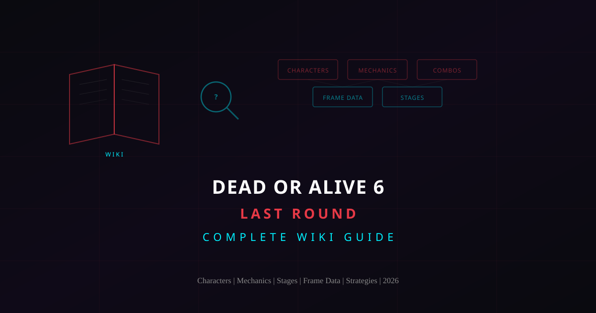
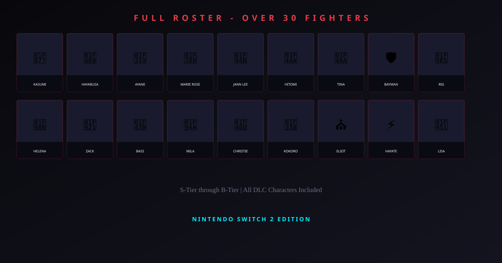
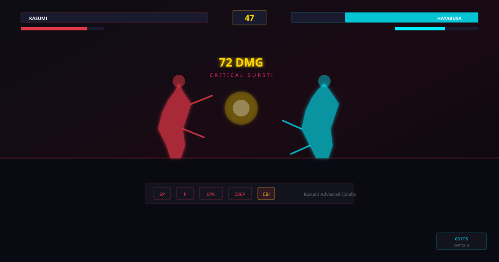

Dead or Alive 6 Last Round Wiki: The Complete Knowledge Base for Characters, Mechanics, Stages, and Strategies
Welcome to the Dead or Alive 6 Last Round wiki — your comprehensive reference for everything in the definitive edition of Team Ninja's flagship fighter. Whether you are searching for character breakdowns, mechanic explanations, stage details, frame data, or competitive strategies, this wiki-style guide covers the entire game from the ground up.

TABLE OF CONTENTS
What Is the Dead or Alive 6 Last Round Wiki?
A Dead or Alive 6 Last Round wiki is a centralized knowledge base that documents every element of the game in one place. The fighting game community has a long tradition of building and maintaining wikis for competitive titles, and DOA6 Last Round is no exception. From character move lists and frame data tables to system mechanic breakdowns and matchup strategies, a well-organized wiki serves as the definitive reference for players at every skill level.
This guide functions as a DOA6 Last Round wiki tailored for both newcomers and experienced players. New players will find clear explanations of the game's core systems — the Triangle System, Critical State, Break Gauge, and stage interactions — written in plain language without assuming prior fighting game knowledge. Experienced players will find the technical details they need: frame data concepts, optimal combo routes, tier list analysis, and competitive strategies that define high-level play.
Dead or Alive 6 Last Round is the definitive edition of DOA6, bundling every DLC character, stage, costume, and balance update into a single release. The game features over 30 playable fighters, each with unique move sets, combo routes, and strategic identities. The wiki approach breaks this massive amount of information into organized, searchable sections so you can find exactly what you need without wading through irrelevant content.
Unlike a traditional game manual that covers basics and stops, a wiki evolves with the community. Strategies are refined, tier lists shift with new discoveries, and optimal combos are optimized over time. This wiki reflects the current, post-patch state of DOA6 Last Round, incorporating all balance changes that shaped the competitive meta from the 2019 launch through 2026.
Complete Character Roster Wiki
The roster is the heart of any fighting game wiki. Dead or Alive 6 Last Round features over 30 characters, each representing a distinct martial arts discipline with unique strengths, weaknesses, and playstyle identity. Understanding the roster means understanding who you want to play and who you will face in competitive matches.
Roster Overview
The full roster spans multiple martial arts traditions and archetypes:
| Character | Fighting Style | Archetype |
|---|---|---|
| Kasumi | Mugen Tenshin Ninjutsu | Speed / Rushdown |
| Hayabusa | Ninjutsu | Burst Damage / Grappler |
| Ayane | Mugen Tenshin Ninjutsu | Evasion / Mix-up |
| Hayate | Mugen Tenshin Ninjutsu | Balanced / Pressure |
| Hitomi | Karate | Balanced / Beginner Friendly |
| Jann Lee | Jeet Kune Do | Rushdown / Counter-hit |
| Leifang | Tai Chi Quan | Counter / Defensive |
| Bayman | Combat Sambo | Grappler / Tank |
| Marie Rose | Systema | Mix-up / Evasion |
| Honoka | Honoka Fu | Versatile / Copy |
| Mai Shiranui | Ninjutsu (KOF) | Guest / Rushdown |
| Kula Diamond | Anti-K' Arts | Guest / Zoner |
This table represents a sample of the roster. The full game includes over 30 fighters with additional characters like Christie (She Quan), La Mariposa (Lucha Libre), Brad Wong (Drunken Fist), Eliot (Xing Yi Quan), Rig (Taekwondo), Bass (Pro Wrestling), Tina (Pro Wrestling), and many more. Each character has a detailed move list with over 100 techniques, making the depth of any single fighter substantial.
For complete character profiles, move lists, and tier rankings, visit our dedicated Character Roster and Tier List pages.

The Triangle System Explained
The Triangle System is the foundational combat mechanic of Dead or Alive. Every interaction in the game flows through this rock-paper-scissors framework, and understanding it is the single most important piece of knowledge for any DOA6 player.
The Triangle works as follows:
- Strikes beat Throws. Fast punches, kicks, and special moves interrupt an opponent's throw attempt before it connects. Strikes are your default offensive tool and the most common action in any match.
- Throws beat Holds. If an opponent attempts a reversal hold, a well-timed throw catches them during the hold's startup frames. Throws are the punish for predictable defensive play.
- Holds beat Strikes. Reversal holds deflect incoming attacks and deal counter damage. If your opponent is pressing buttons aggressively, a well-timed hold turns their offense against them.
This creates a continuous decision loop. In any given moment, both players are making reads about what the other will do. Will they strike? Throw? Hold? Each choice has a counter, and each counter has its own counter. The depth of DOA6's combat comes from layering this Triangle with movement, spacing, stage positioning, and meter management.
For new players, the key insight is this: DOA6 is a game of reads, not reactions. While reaction speed matters, the best players are those who correctly predict their opponent's next action and choose the right counter. This is why DOA6 is sometimes described as the most strategic 3D fighter — every exchange is a mind game.
Advanced Triangle Concepts
At higher levels, the Triangle becomes more nuanced. Throw escapes let you break out of throws if you input the correct throw break within a tight window. Hold delays allow you to input a hold slightly late and still catch a strike in its active frames. Strike priority means faster strikes can beat slower ones in neutral. These micro-interactions add layers of depth beyond the basic three-way framework.
Critical System and Break Gauge
Beyond the Triangle, DOA6 introduced two interconnected systems that add strategic resource management to every round.
Critical State
Landing certain attacks puts your opponent into Critical State, a staggered condition where they cannot block. During Critical State, you can extend your pressure with additional hits that keep the opponent staggered, building toward a Critical Burst. The longer the Critical State is extended, the more damage subsequent attacks deal thanks to the scaling bonus.
A Critical Burst is the climax of a Critical State sequence. It launches the opponent into the air for a full juggle combo, dealing massive damage. Knowing when to Burst and when to continue extending Critical State is a key skill that separates intermediate players from experts. Burst too early and you leave damage on the table; extend too long and the opponent may escape.
Break Gauge
The Break Gauge is DOA6's super meter. It fills as you deal and receive damage, and provides three meter-spending options:
- Break Blow — A cinematic super attack with armor properties. Costs a full gauge. Deals high damage and can absorb one hit during startup.
- Break Hold — An enhanced reversal hold that works against more attack types than a standard hold. Costs half a gauge.
- Sidestep Attack — A quick evasive strike that dodges linear attacks. Costs half a gauge.
Managing your Break Gauge adds a resource management layer to every round. Do you spend meter early for a Break Blow to close out a round, or save it for defensive Break Holds? These decisions create dramatic momentum swings in competitive matches.
Stage Guide and Environmental Hazards
Stages in Dead or Alive 6 Last Round are not just backgrounds — they are active participants in every fight. Understanding stage layouts, environmental hazards, and positioning advantages is essential knowledge documented in any comprehensive DOA6 wiki.
Stage Types
DOA6 Last Round features a variety of stage types, each with unique properties:
- Walled stages feature boundaries that can be used for Wall Combo extensions. Slamming an opponent into a wall triggers additional hit opportunities and bonus damage.
- Open stages have no walls but may contain ledges or environmental transitions. Knocking an opponent off a ledge triggers a stage transition with cinematic bonus damage.
- Danger Zone stages feature environmental hazards like explosions, electrical traps, or destructible objects. Positioning the fight near these hazards creates high-risk, high-reward scenarios.
- Multi-tier stages have multiple levels connected by stage transitions. Knocking an opponent through a floor or off a balcony moves the fight to a new area with different properties.
Stage Strategy
Positioning is about manipulating the stage to your advantage. If your character excels at wall combos, you want to keep the fight near walls. If your opponent relies on wall pressure, you want to stay in the center. Understanding stage geometry gives you a strategic edge that pure combo optimization cannot.
In competitive play, stage selection is part of the strategy. Some characters perform significantly better on certain stage types. A grappler like Bayman benefits from walled stages where throws can splat opponents for extended damage. A mobile character like Ayane may prefer open stages where her evasive movement has more room to operate.
For detailed information on specific stages, check our Game Mechanics guide which covers stage interactions in depth.
Frame Data Essentials
Frame data is the language of competitive fighting games, and it is a critical section of any DOA6 wiki. Every move in Dead or Alive 6 Last Round has specific frame properties that determine its speed, safety, and combo potential.
Understanding Frame Data
Fighting games run at 60 frames per second. Each frame is one-sixtieth of a second. Frame data measures how many frames a move takes to start up, how long it is active, and how many recovery frames follow. Here are the key terms:
- Startup — The number of frames before the move can hit. Lower startup means faster. A jab with 10-frame startup is faster than a heavy kick with 20-frame startup.
- Active — The frames during which the move can connect with an opponent. More active frames means a larger window to land the hit.
- Recovery — The frames after the active period where you cannot act. Longer recovery means more punishable if blocked or whiffed.
- On block (advantage/disadvantage) — How many frames you recover before or after your opponent after a blocked move. Positive means you can act first; negative means your opponent recovers first and can punish.
- On hit — Same concept applied when the move connects. Positive on hit means you maintain pressure advantage.
Why Frame Data Matters
Frame data answers the question: "Is this move safe?" A move that is negative 10 or more on block is punishable by the opponent's fastest attacks. A move that is plus on block lets you continue pressure safely. Knowing the frame data of your character's key moves — and your opponent's — is what allows you to make informed decisions about when to press buttons, when to block, and when to punish.
Frame data for all characters is accessible in the in-game Training Mode. Enable the frame data display in the training options to see startup, active, and recovery frames in real time as you perform moves. This is the most reliable way to learn frame data because you see it in the context of actual gameplay.
External frame data resources maintained by the DOA6 community provide searchable databases with sortable tables for every character. These community wikis are invaluable for comparing moves across characters and identifying universal punish options.
Combo System Wiki
Combos are sequences of attacks that, once the first hit connects, guarantee subsequent hits before the opponent can recover. The DOA6 combo system has several layers documented in any thorough wiki:
Combo Types
- Normal combos — String-based sequences built into each character's move list. These are the bread-and-butter combos that every player should learn first.
- Critical State combos — Extended sequences that begin after putting an opponent into Critical State. These build toward a Critical Burst launcher.
- Wall combos — Additional hits triggered when an opponent is slammed into a wall. Wall combo routes vary by character and wall angle.
- Juggle combos — Air combos performed after a Critical Burst or other launcher. Juggle routes are where the highest damage potential lies.
- Power Launcher combos — Specialized launchers that send opponents higher than standard launches, enabling extended juggle sequences for maximum damage.
Combo Optimization
Optimal combo routes balance three factors: damage output, execution difficulty, and stage positioning. A 10-damage increase may not be worth a significantly harder execution requirement if it drops your consistency. The best combos for competitive play are those you can land reliably under tournament pressure.
For character-specific combo guides from beginner to advanced, visit our Combo Guides page with damage values and difficulty ratings.
Game Modes Breakdown
Dead or Alive 6 Last Round includes multiple game modes, each serving a different purpose in a player's journey from beginner to competitor:
Story Mode
The Story Mode follows a multi-chapter narrative featuring cinematic cutscenes and character-specific episodes. While it is not the primary reason competitive players pick up the game, Story Mode provides context for the characters and their motivations. It is also the best way for complete newcomers to experience the roster and get a feel for different fighting styles before committing to a main character.
Training Mode
Training Mode is the most important mode for improvement. It features frame data display, recording and playback for the dummy, combo challenges, and customizable dummy behavior. Every serious player spends significant time in Training Mode drilling combos, testing punish options, and learning matchup-specific responses. This is where wiki knowledge becomes practical skill.
Quest Mode
Quest Mode provides structured single-player objectives with specific win conditions. These missions teach players to apply specific mechanics under controlled scenarios, making them excellent learning tools for players who want structured improvement rather than freeform practice.
Versus and Online
Local Versus supports same-console multiplayer for in-person matches. Online offers Ranked Matches, Quick Matches, and Private Rooms. The ranked ladder is where competitive players test their skills against the global community. Replays from online matches can be saved and reviewed for self-analysis.
Competitive Play and Tier Lists
The competitive dimension of DOA6 Last Round is where wiki knowledge reaches its highest value. Tournament play demands deep understanding of every system, character matchup, and stage interaction.
Current Tier List Summary
The competitive tier list reflects the post-patch balance state of DOA6 Last Round. Here is the general consensus from the competitive community:
| Tier | Characters | Strengths |
|---|---|---|
| S-Tier | Kasumi, Hayabusa, Ayane, Marie Rose | Top-tier speed, mix-ups, and tournament results |
| A-Tier | Jann Lee, Hitomi, Hayate, Leifang | Strong fundamentals, reliable tools, consistent damage |
| B-Tier | Bayman, Tina, Rig, Christie, Mai | Solid picks with specific matchup advantages |
| C-Tier | Eliot, Brad Wong, La Mariposa, others | Viable but require more effort to compete at top level |
Tier lists are guidelines, not gospel. Player skill, matchup knowledge, and adaptation matter more than character selection in most competitive contexts. A well-practiced B-tier character can defeat an unpracticed S-tier character consistently. Choose a character you enjoy and invest the time to master them.
For the most current tier list with detailed analysis, visit our Tier List page. For in-depth character strategies and matchup breakdowns, the Character Roster page is your next stop.
